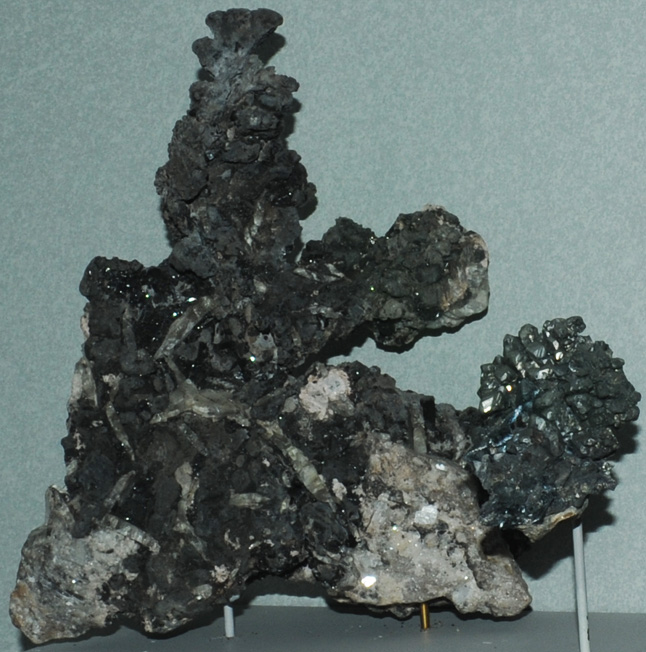

|

| Pb
This sample of elemental lead is displayed in the Smithsonian Museum of Natural History. The sample at left is about 20 cm across and is from Langban mine, Filipstad, Varmland, Sweden. It is described as lead with pyrochroite and barite. It is rare to find elemental lead; its most common ore is the sulfide galena, PbS.
|